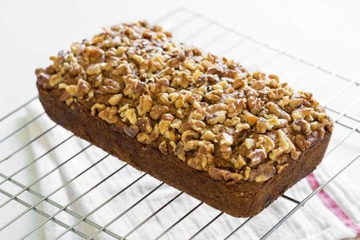

Vegan Banana Bread

If you are like me, and have a severe allergy to tree nuts, substitute the ingredient for something else. Some examples and ideas for alternatives that I use can be found under "Allergy Alternatives."
This recipe makes 1 loaf
Prep Time: 10 minutes
Cook Time: 50 minutes
Ingredients
- 1 1/3 cups mashed banana (about 3-4 bananas)
- 2 tablespoons ground flaxseed
- 1/3 cup almond milk
- 1/3 cup coconut oil
- 2 tablespoons pure maple syrup
- 2 teaspoons pure vanilla extract
- 1/2 cup rolled oats
- 1 teaspoon baking soda
- 1/2 teaspoon salt
- 1 1/2 cups white whole wheat flour
- 1/2 cup walnuts
Directions
- Preheat the oven to 350°F. Lightly spray a 9x5-inch loaf pan with oil and set aside.
- In a large bowl, mash the banana until almost smooth. Stir in the ground flax, almond milk, coconut oil, maple syrup, and vanilla into the banana until combined.
- Stir the sugar, oats, baking soda, baking powder, salt, and flour into the wet mixture, one by one, in the order listed. Stop stirring when there are no flour patches at the bottom of the bowl.
- Distribute the dough into the loaf pan and spread out evenly. Add the walnuts and gently press them into the dough to adhere.
- Bake the loaf, uncovered, for 45 to 55 minutes or until lightly golden and firm on top. The top of the loaf should slowly spring back when touched.
- Place the loaf pan on a cooling rack for 30 minutes. Then, slide a knife around the loaf to loosen it and gently remove it from the pan, placing it directly onto the cooling rack until completely cooled (or to hasten the cooling process, transfer to the fridge for 45 minutes).
- Slice the loaf once cooled. The loaf will keep in the fridge tightly wrapped for 3 to 4 days, or it can be frozen for 4 to 6 weeks.